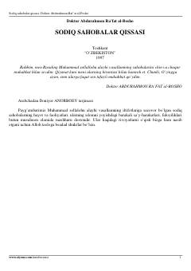

SSPayg'ambarimiz sollallohu alayhi vasallam sahobalarining ibratli hayot yo'li va fidoyiliklari haqida.
Ushbu kitobda Payg'ambarimiz Muhammad sollallohu alayhi vasallamning sahobalari hayoti, ularning islom dinini yoyishdagi fidoyiliklari va ibratli qissalari bayon etilgan. Asar sahobalarning iymon-e'tiqodi va axloqiy fazilatlarini yoritib beradi.